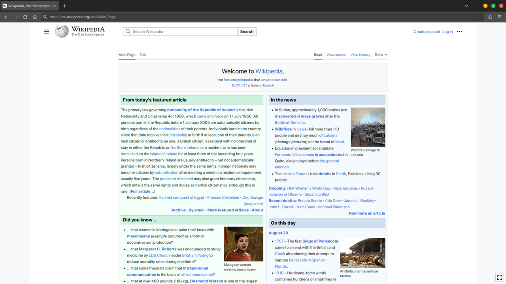

Session 3 — Working with Text and Images
Text and images are 90% of every web page.
canvases/buoi-03.canvas.tsxebook/03-working-with-text-and-images.mdslides/03-working-with-text-and-images.mdexercises/session-03/exercise.mdhomework/session-03/Session 3 — Working with Text and Images
Slide 1 of 34 #Working with Text & Images
Headings, paragraphs, lists, bold/italic, images with alt text, and choosing the right image format.
Speaker notes
Learning Objectives
Slide 2 of 34 #After this session you will be able to:
1. Use headings (h1-h6) correctly in proper hierarchy
2. Format text with p, strong, em, br, hr
3. Create unordered and ordered lists, including nested lists
4. Insert images with src, alt, width, and height attributes
5. Choose JPG, PNG, GIF, or SVG based on image type
6. Write meaningful alt text for accessibility
Today's 150-Minute Plan
Slide 3 of 34 #Session timeline
Welcome & objectives
Recap of Session 2
New content + live demos
In-class practice (Tasks 1–4)
Homework briefing
Recap & next session
Recap: What Did We Learn Last Time?
Slide 4 of 34 #Quick review — Session 2
If you cannot answer these, review Session 2 before continuing.
Headings: Page Structure
Slide 5 of 34 #Headings create a page outline
h1 = the book title (one per page) · h2 = chapter titles · h3 = sections inside a chapter. Headings are structure, never a way to make text bigger — that is CSS.
Anatomy of a Real Web Page
Slide 6 of 34 #Anatomy of a Real Web Page

Screenshot: QuickQuokka — Public domain, Wikimedia Commons
Spot these on the page:
The one big title at the top = <h1>
Blocks of readable text = <p> paragraphs
Blue underlined clickable words = <a> links
Photos with captions below them = <img> + alt text
The menu on the left side = a list of links (<ul>)
Speaker notes
Heading Tag Reference
Slide 7 of 34 #Six heading levels at a glance
Tag
Default Size
Usage
<h1>
~32px, bold
Main title — ONE per page
<h2>
~24px, bold
Major sections
<h3>
~20px, bold
Subsections under h2
<h4>
~18px, bold
Sub-subsections
<h5>
~16px, bold
Rarely needed
<h6>
~14px, bold
Very rarely needed
Text Formatting
Slide 8 of 34 #Paragraphs, bold, italic, breaks
1<p>A paragraph of text.</p>23<strong>Important</strong> = bold + semantic4<em>Emphasis</em> = italic + semantic56<br> = line break (addresses, poetry)7<hr> = horizontal rule (section divider)HTML ignores extra whitespace. Pressing Enter in code does NOT create a new line in the browser.
strong/em vs b/i
Slide 9 of 34 #Same look, different meaning
1<strong>deadline</strong>2<em>strictly</em>Bold/italic + meaning. Screen readers announce emphasis.
1<b>product name</b>2<i>foreign word</i>Bold/italic with NO meaning. Purely visual styling.
Using br and hr Correctly
Slide 10 of 34 #When to use br and hr
1<!-- br: addresses, poetry -->2<p>Room 101<br>3Building A<br>4University Campus</p>56<!-- hr: thematic section break -->7<hr>1<!-- WRONG: spacing between sections -->2<p>Section 1</p>3<br><br><br>4<p>Section 2</p>56<!-- Use CSS margin instead! -->Text Elements Reference
Slide 11 of 34 #All Text Tags at a Glance
| Element | What it renders | When to use it |
|---|---|---|
| h1 – h6 | Headings, largest to smallest | Page outline — one h1 per page, never skip levels |
| p | A paragraph block with spacing | Any block of running text |
| strong | Bold text with importance | Key terms, warnings, deadlines |
| em | Italic text with emphasis | Words you would stress when speaking |
| ul + li | Bulleted list items | Items where order does not matter |
| ol + li | Numbered list items | Steps, rankings, anything sequential |
| blockquote | Indented quotation block | Quoting someone — club motto, testimonial |
| br | Line break (self-closing) | Addresses, poetry — never for spacing |
| hr | Horizontal rule (self-closing) | Thematic divider between sections |
Speaker notes
Lists: ul, ol, Nested
Slide 12 of 34 #Unordered, ordered, and nested lists
Unordered (bullets)
1<ul>2 <li>Web Workshop</li>3 <li>Photo Contest</li>4 <li>Music Night</li>5</ul>Order does NOT matter
Ordered (numbers)
1<ol>2 <li>Fill out form</li>3 <li>Attend orientation</li>4 <li>Pay membership fee</li>5</ol>Order IS critical
Nested Lists Explained
Slide 13 of 34 #A list inside a list
1<ul>2 <li>Frontend Skills3 <ul>4 <li>HTML</li>5 <li>CSS</li>6 <li>JavaScript</li>7 </ul>8 </li>9 <li>Backend Skills10 <ul>11 <li>PHP</li>12 <li>MySQL</li>13 </ul>14 </li>15</ul>The inner <ul> is placed INSIDE the <li>, after the text and before </li>.
Indentation shows nesting visually but does not affect rendering.
You can nest deeper but avoid going beyond 3 levels — it becomes hard to read.
Quick Check: Text Tags
Slide 14 of 34 #Test yourself
Discuss with your neighbor for 30 seconds.
Try It Now: Add an Image
Slide 15 of 34 #Three minutes — add an image to your page
Step 1: Save an image
Download any image and save it as images/club-photo.jpg in your project folder.
Step 2: Add the tag
1<img2 src="images/club-photo.jpg"3 alt="Club members at the annual event"4 width="400"5>What to check
1. The image appears in the browser — no broken icon.
2. If you see a broken icon, right-click → Inspect → check the src path in the Elements panel.
3. The alt text is descriptive — it says what is IN the image, not just "image" or "photo."
The img Tag
Slide 16 of 34 #Every attribute of <img> does one job
Image Attributes Reference
Slide 17 of 34 #Four attributes you need
Attribute
Purpose
Example
src
Path to the image file
images/photo.jpg
alt
Description for screen readers
Club members at workshop
width
Width in pixels
400
height
Height in pixels
300
Alt Text & Accessibility
Slide 18 of 34 #Writing good alt text
The alt attribute is NOT optional. Screen readers read it aloud. Search engines rely on it.
Choosing Image Formats
Slide 19 of 34 #JPG vs PNG vs GIF vs SVG
Which Format Do I Pick?
Slide 20 of 34 #Quick decision guide
Photograph? → JPG (millions of colors, small file size)
Logo or icon that must stay sharp? → SVG (scales to any size)
Need transparent background? → PNG (supports alpha channel)
Short animation? → GIF (but consider video instead)
Screenshot? → PNG (preserves text clarity)
Choosing an Image Format
Slide 21 of 34 #Format Quick Reference
| Format | Best for | Avoid when |
|---|---|---|
| JPG | Photos, banners, images with many colors | You need transparency or sharp edges |
| PNG | Logos, screenshots, transparency, sharp edges | The file is a photograph (use JPG instead) |
| GIF | Tiny animations, very few colors | The image has more than 256 colors |
| SVG | Icons, logos that must stay sharp at any size | The image is a photograph |
Speaker notes
Worked Example 1: Basic Text Page
Slide 22 of 34 #Simple page with headings and lists
1<body>2 <h1>Student Club</h1>3 <h2>About Us</h2>4 <p>We are a community of5 <em>creators</em> and6 <strong>innovators</strong>.</p>78 <h3>Activities</h3>9 <ul>10 <li>Weekly workshops</li>11 <li>Design contests</li>12 <li>Social events</li>13 </ul>14</body>h1 → h2 → h3 — proper hierarchy, no levels skipped.
<em> adds italic emphasis. <strong> adds bold importance.
<ul> for items where order does not matter.
Worked Example 2: Rich About Page
Slide 23 of 34 #About page with text, lists & images
1<main>2 <h2>About Our Club</h2>3 <p>The <strong>Student Club</strong> is a4 community of <em>creators</em>.</p>56 <h3>What We Do</h3>7 <ul>8 <li><strong>Workshops:</strong> web design</li>9 <li><strong>Contests:</strong> photography</li>10 <li><strong>Social:</strong> movie nights</li>11 </ul>1213 <h3>How to Join</h3>14 <ol>15 <li>Fill out the membership form</li>16 <li>Attend orientation</li>17 <li>Pay the annual fee</li>18 </ol>1920 <img src="images/team-photo.jpg"21 alt="Five leaders at IT building"22 width="400" height="300">23</main><h2> then <h3> — proper heading hierarchy. Never skip levels.
<strong> = bold + semantic importance. <em> = italic + emphasis.
<ul> for unordered items (activities). <ol> when order matters (steps).
alt text describes what the photo shows — not "image" or the filename.
width/height prevent layout jump while loading.
Discussion: Why Does Alt Text Matter?
Slide 24 of 34 #Think about accessibility
A blind person uses a screen reader to browse the web.
Without alt text, they hear "image" or the filename — completely useless.
With good alt text, they hear a description and understand the content.
Google also reads alt text for image search rankings.
Common Mistakes
Slide 25 of 34 #Watch out for these mistakes
Self-Study Check
Slide 26 of 34 #Can You Answer These?
Check your answers in the speaker notes. If you missed two or more, re-read the relevant slides before starting practice.
Speaker notes
In-Class Practice
Slide 27 of 34 #In-class practice (exercises/session-03/)
Task 1: Practice Headings (h1 through h6)
Create text-practice.html with all six heading levels. One h1 per page.
Task 2: Paragraphs and Text Formatting
Add paragraphs using p, strong, em, br, and hr tags for text formatting.
Task 3: Lists (Unordered and Ordered)
Create ul and ol lists plus a nested list mixing both types.
Task 4: Adding Images
Insert images using img with src, alt, width, and title attributes via relative paths.
Practice Tips
Slide 28 of 34 #Tips for the in-class tasks
Copy an image into your images/ folder BEFORE writing the <img> tag.
Check the path carefully — if the image is broken, the path is wrong.
Write real alt text — describe what you actually see in the photo.
Preview after every save to verify headings render at different sizes.
Text & Images: Do vs Don't
Slide 29 of 34 #Do vs Don't
Do
Use exactly one <h1> per page, then h2, h3 in order
Write alt text that describes the image content
Use <strong> and <em> for meaning
Resize images to their display size before uploading
Use <ul> for unordered and <ol> for ranked lists
Don't
Pick a heading level because you like its font size
Write alt="image" or alt="photo.jpg"
Use <br><br> to fake paragraph spacing — that is CSS margin
Serve a 4000px photo scaled down in the browser
Fake a list with hyphens and <br> tags
Debug This
Slide 30 of 34 #Four problems in eight lines. Spot them.
1<h1>Our Club</h1>2<h3>About Us</h3>3<p>We meet weekly.<br><br>Everyone is welcome.</p>4<img src="images/team.jpg">5<ul>6 <p>Monday</p>7 <p>Wednesday</p>8</ul><h3> after <h1> skips h2. Screen reader users navigating by heading think a level is missing.
<br><br> fakes spacing. Use two separate <p> elements and set margin in CSS.
The <img> has no alt attribute. A blind user hears only the file name, or nothing at all.
<ul> may only contain <li> children. Replace both <p> elements with <li>.
Practice Checkpoints
Slide 31 of 34 #How to Know Each Task Is Done
Exactly one <h1> on the page, and heading levels descend without skipping.
Every <img> has alt text you could read aloud and still understand the page.
Both list types render correctly: bullets for <ul>, numbers for <ol>.
No image file is larger than about 300 KB, and none is wider than 1200px.
Assignment: Rich Content Page
Slide 32 of 34 #Start in class — finish for homework
Deliverable
pages/about.html for your Student Club Website, filled with real text and images.
Acceptance criteria
One <h1>, at least two <h2> sections, no skipped levels.
At least two images, each with descriptive alt text.
One <ul> and one <ol>, used for the right kind of content.
At least one <strong> and one <em> used for meaning, not styling.
Before you submit
Validate at validator.w3.org — zero errors.
Read your alt text aloud. Does it describe the image?
Check every image loads — no broken-image icons.
Homework
Slide 33 of 34 #Homework 3 (homework/session-03/)
Building the About Page — enhance your about.html with rich, accessible content.
Task 1: Use h1/h2/h3 headings, 3+ paragraphs, ul + ol lists, and 2+ images with descriptive alt text.
Task 2: Add a Photo Gallery section with h2 "Photo Gallery", at least 3 images, each with different alt text and a short caption paragraph.
Recap & Next Session
Slide 34 of 34 #Recap
One h1 per page; never skip heading levels
Use strong/em for semantic emphasis, not b/i
ul for unordered items, ol when order matters
Every img needs src, alt, width, and height
Choose format wisely: JPG for photos, PNG for logos, SVG for icons
Alt text describes what the image shows — keep it concise
Next: Session 4
Using CSS — selectors, colors, fonts, linking external stylesheets to your HTML pages.